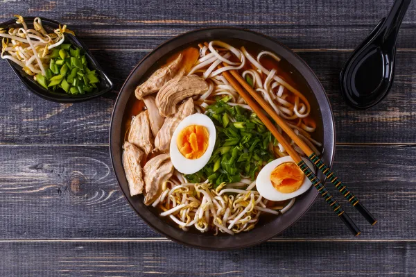
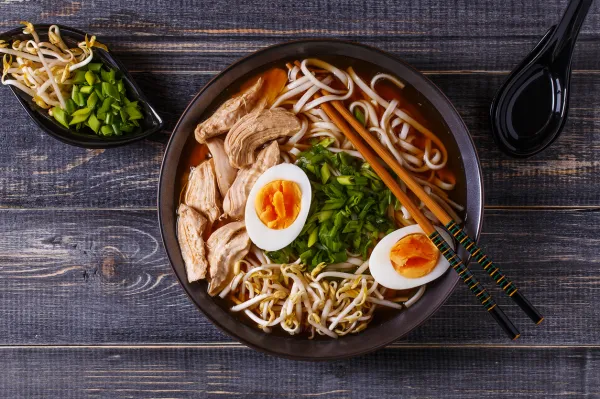

Donde el pasado se fusiona con el futuro en cada esquina
Tokio, la efervescente y multifacética capital de Japón, se erige como un microcosmos en el que convergen el pasado y el futuro de manera armoniosa y sorprendente. Con una población que supera los 13 millones de habitantes, esta metrópolis cosmopolita es una mezcla fascinante de tradición arraigada y vanguardia deslumbrante. Sus bulliciosas calles albergan desde imponentes rascacielos que tocan el cielo hasta rincones históricos donde el tiempo parece haberse detenido. Tokio es una sinfonía de contrastes, donde los neones parpadeantes de Shibuya y Shinjuku contrastan con la serenidad de los jardines imperiales y los antiguos templos de Asakusa. La ciudad también es un crisol de cultura pop, desde las extravagantes tendencias de moda de Harajuku hasta los últimos avances tecnológicos de Akihabara. Más allá de su bullicio y energía, Tokio acoge con calidez a quienes la visitan, ofreciendo una experiencia inolvidable que trasciende las palabras y se graba en la memoria de quienes tienen el privilegio de explorarla.

Historia
La historia de Tokio es un relato fascinante de evolución urbana y transformación cultural a lo largo de los siglos. Desde sus modestos inicios como un pequeño pueblo de pescadores llamado Edo hasta convertirse en la próspera y vibrante metrópolis que es hoy en día, Tokio ha experimentado un viaje extraordinario. A lo largo de los siglos, ha sido testigo de períodos de auge y declive, desde el florecimiento durante el período Edo hasta la devastación causada por los terremotos y bombardeos durante la Segunda Guerra Mundial. Sin embargo, Tokio ha demostrado una notable capacidad para reconstruirse y reinventarse, convirtiéndose en un centro global de cultura, tecnología y negocios que continúa inspirando y asombrando a millones de personas en todo el mundo.

Historia
La historia de Tokio es un relato fascinante de evolución urbana y transformación cultural a lo largo de los siglos. Desde sus modestos inicios como un pequeño pueblo de pescadores llamado Edo hasta convertirse en la próspera y vibrante metrópolis que es hoy en día, Tokio ha experimentado un viaje extraordinario. A lo largo de los siglos, ha sido testigo de períodos de auge y declive, desde el florecimiento durante el período Edo hasta la devastación causada por los terremotos y bombardeos durante la Segunda Guerra Mundial. Sin embargo, Tokio ha demostrado una notable capacidad para reconstruirse y reinventarse, convirtiéndose en un centro global de cultura, tecnología y negocios que continúa inspirando y asombrando a millones de personas en todo el mundo.
Cultura
La cultura de Tokio es una amalgama vibrante y dinámica que refleja la rica historia y diversidad de la ciudad. Como epicentro de la moda, la tecnología y las artes, Tokio es un crisol donde convergen tradiciones ancestrales y tendencias contemporáneas. Desde la exuberante moda callejera de Harajuku hasta la elegante ceremonia del té en los antiguos barrios de la ciudad, Tokio ofrece una gama infinita de experiencias culturales. Los festivales tradicionales, como el hanami (la observación de flores de cerezo) y el matsuri (festivales religiosos), coexisten con la efervescencia de la vida nocturna y la gastronomía de clase mundial que abarca desde puestos callejeros de ramen hasta restaurantes con estrellas Michelin. Además, Tokio es un centro neurálgico para la cultura pop japonesa, desde el anime y el manga hasta la música J-Pop, que ejerce una influencia global. En resumen, la cultura de Tokio es vibrante, diversa y siempre sorprendente, atrayendo a visitantes de todo el mundo con su energía inigualable y su capacidad para reinventarse constantemente.
Cultura
La cultura de Tokio es una amalgama vibrante y dinámica que refleja la rica historia y diversidad de la ciudad. Como epicentro de la moda, la tecnología y las artes, Tokio es un crisol donde convergen tradiciones ancestrales y tendencias contemporáneas. Desde la exuberante moda callejera de Harajuku hasta la elegante ceremonia del té en los antiguos barrios de la ciudad, Tokio ofrece una gama infinita de experiencias culturales. Los festivales tradicionales, como el hanami (la observación de flores de cerezo) y el matsuri (festivales religiosos), coexisten con la efervescencia de la vida nocturna y la gastronomía de clase mundial que abarca desde puestos callejeros de ramen hasta restaurantes con estrellas Michelin. Además, Tokio es un centro neurálgico para la cultura pop japonesa, desde el anime y el manga hasta la música J-Pop, que ejerce una influencia global. En resumen, la cultura de Tokio es vibrante, diversa y siempre sorprendente, atrayendo a visitantes de todo el mundo con su energía inigualable y su capacidad para reinventarse constantemente.
Gastronomia
La gastronomía de Tokio es una experiencia sensorial incomparable que combina la tradición culinaria japonesa con la innovación contemporánea. Desde los exclusivos restaurantes de sushi con estrellas Michelin hasta los humildes puestos callejeros que ofrecen ramen reconfortante, Tokio es un paraíso gastronómico para todos los paladares. Los amantes de la comida pueden deleitarse con una amplia variedad de platos auténticos, como el sushi fresco, el sashimi delicadamente cortado, el tempura crujiente y el okonomiyaki elaborado a la parrilla. Además, la ciudad alberga una impresionante selección de izakayas, donde se pueden disfrutar de platos pequeños y bebidas alcohólicas en un ambiente acogedor y relajado. La comida callejera también es una parte esencial de la escena gastronómica de Tokio, con delicias como takoyaki, yakitori y taiyaki disponibles en cada esquina. En resumen, la gastronomía de Tokio es una celebración de sabores, texturas y técnicas culinarias que deleitan a los comensales y reflejan la rica diversidad cultural de la ciudad.
 


¿Tienes alguna pregunta?
¡No dudes en enviar tu consulta!